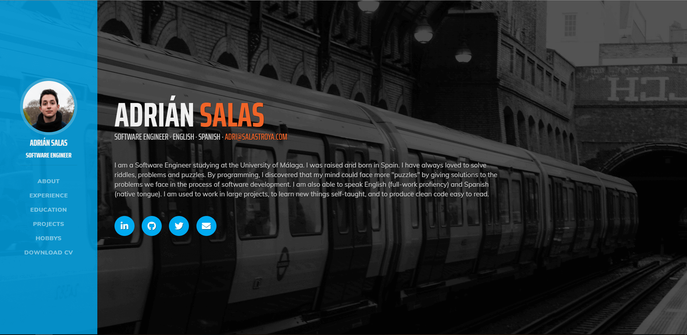

Flask - Doctor appointments
Python Flask Behave Gherkin unittest Bootstrap Jinja
University Project. This was an optional project I did for a subject about testing software. The web-app was done with TDD and BDD. In this app I learn more about the framework Flask, and I learn how to use Behave (BDD) and unittest (TDD). In the app you can ask for appointments if you are a patient or check your schedule if you are a doctor. Github Link

Java EE - Buy and sell web
Java JSP Servlet Java EE HTML CSS JavaScript Java DB
University Project. In this app I worked with 3 other students to design and develop this web-app to buy and sell items. It is similar to wallapop, ebay... In this web-app we used Java EE in order to do the dynamic part of the web. We are not using any CSS framework, and it is not responsive. We follow a MVC design, the Servlets are controlling the app, the JSP are generating the View for the users. Github Link

Python API
Python Flask Docker SQLite
Simple project to serve as a basis for creating APIs in Python using Flask and SQLite. I'm making a youtube tutorial on how to do it in spanish. I will put a link when it is ready. Github Link

Desktop APP to manage a medic database
JavaScript Node.JS Electron MariaDB Raspberry Pi 3+
University Project. This application is for the maintenance of a database of chemical solutions used in different biological crops. Github Link

AI in Robocode
Java
University Project. I built three different java apps using the game Robocode to apply some knowledge of AI. I wrote an A* algorithm to solve a random generate map, a genetic algorithm to improve the skill of a tank, and a neural network to predict the output of the battles before the actual battle. Github Link

PetsApp
Java UML SCRUM TDD
University Project & not finished product In this app I worked with 4 international students (1 Greek, 2 Polish, 1 Korean) to design and start developing a social benefit application. Our idea was to build an "online shelter" to help animals. We developed the backend in java and learned how to work using Test Driven Development (TDD) and SCRUM methodology. We did mock-ups of the GUI in Android Studio and HTML/CSS/JavaScript but the only part we "finished" was the business logic in Java. Github Link

Bitwise Random Generator with Threads
Java Java Swing
University Project. A desktop app that given a number of iterations it will start generating the bitwise operation of two different sequence of random bits. Two different threads are generating the bits of the Sequence 1 and Sequence 2 meanwhile a third thread is doing the bitwise operation and upgrading the progress bar. Github Link

This website 😄
HTML CSS JavaScript Bootstrap
During my years at the university I wanted to stand out as much as possible when I started looking for work. For this I decided to make this webpage that you are seeing. The most remarkable thing was that I designed and anti-spam filter for bots generating my email encoded by JavaScript and that you can check my portfolio easily. Github Link | Web Link
Raspberry Pi 2 - Game LED
Assembly ARM
University Project. This is a two player game, this is supposed to be connected to bigger buttons and leds, in order to create a a game similar to "simon game". Each player needs to press his/her button when one of his leds turns on. Each time the time-frame to press the button is smaller, so you need to be fast. If you press the button when it is not your turn you loose. Github Link

Desktop App to generate OpenSCAD
Java Java Swing OpenSCAD
I collaborated with an industrial engineer for the creation of a desktop application that allowed you to modify a 3D piece previously designed in OpenSCAD. This app makes use of CMD, so despite being made in java it only works on windows and need a 2014 or 2015 OpenSCAD installation. NO OPEN-SOURCE, if you want more info about this project in particular contact me by email.